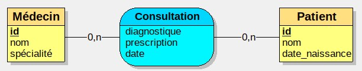
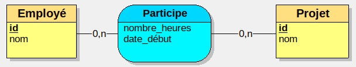

Consultation
Pour modéliser une consultation, on a les entitésmédecin (id, nom, spécialité) et patient (id, nom, date_naissance)
Lors d'une consultation, le médecin établit un diagnostique et une prescription (chaînes de caractères) à une date donnée.
Faites le MCD correspondant.
Voir la solution
 En effet, la date de consultation, le diagnostique et la prescription dépendent de l'interaction entre le patient et le médecin.Employé - projet
On modélise la participation des employés d'une entreprise à différents projets.On souhaite intégrer au modèle les informations suivantes :
- Identifiant de l'employé
- Nom de l'employé
- Identifiant du projet
- Nom du projet
- Date de début de participation d'un employé à un projet
- Nombres d'heures travaillées sur un projet
Voir la solution
Boire dans un verre
Pour enregistrer qui a bu dans quel verre, on a cette portion de MCD : Est-ce que cela vous semble correct ?
Est-ce que cela vous semble correct ?